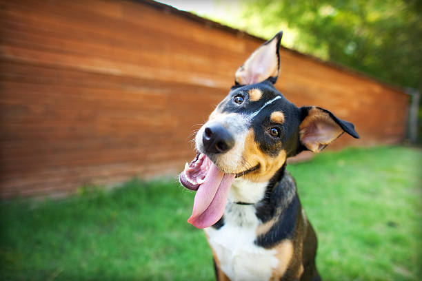

Happy Paws Pet Adoption
Helping Pets Find Loving Homes
Helping Pets Find Loving Homes

Age: 2 years
Welcome to the home of Buddy, an enthusiastic and playful Labrador who enjoys running, playing fetch and exploring open spaces. He's gentle, loyal and easy to train and is a great pet for those with a need for action or a family searching for a fun and loving dog..

Age: 1 year
Meet Luna, the quiet and loving cat who adores cuddles and lengthy naps. She is a gentle creature and likes to unwind in cosy places, spending peacable loving moments with people. Overall, Luna is a great choice for anyone seeking a low-maintenance, cuddly, and affectionate pet.

Age:2 year
Meet Max, a gentle and loyal dog in search of a loving family. He is a gentle-natured animal who likes to be in a quiet environment and have a companion, which makes him an ideal candidate for a loving house. Max is well behaved, loving, and bonds with people who he trusts, providing them with comfort, warmth and loyalty.

Age:11 months
Say hello to Milo, the playful kitten who loves toys, fun games and lots of attention. He is full of energy and curiosity, exploring his surroundings and enjoying interactive playtime. Milo is also hugely affectionate, so he is a hugely fun and loving little companion for any that needs a lively little friend.